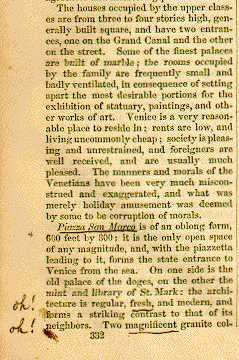

| [The two illustrations here are from the copy of Harper's carried through Italy in 1871 by Col. W. Gordon McCabe, of Petersburg, Va. In the margins of the book McCabe often made comments or signs that indicated his responses, as can be seen here.] |
|
 in Europe and The East (Ninth Year) By W. Pembroke Fetridge (New York: Harper & Brothers, 1870) [The section on Paris, the longest in the book, covers 74 pages. It begins with a discussion of hotels, then backs up to consider the history of the city and its contemporary political situation, before getting to the attractions. Starting with museums, Fetridge concludes by talking about how to get oneself presented to the Emperor, and where to buy the new clothes one would want to wear on such an occasion. The following two passages are from the middle of this lengthy account.] The Mabille, or Jardin des Fleurs, should be visited in the evening. Every thing that taste and skill could do has been done to make it a fairy scene of enchantment. In a beautiful semicircular building is seated a well-conducted orchestra, around which the "gayest of the gay" whirl themselves through the mazes of the waltz, polka, and mazourka. As the dances are, as a general thing, considered a little loose, it is unnecessary to say the gentleman traveler is not expected, in company with his wife or daughter, to join in the amusement of the dancers, although we see no harm in looking on. It may be that "chilling reserve" is not a characteristic of the ladies who frequent these gardens; still, every thing is conducted with a proper regard for public decency. Recesses, bowers, and groves every where meet the eye, while multitudes of gas-lights twinkle through the grass, or illuminate the Chinese lanterns festooned from the trees. You have also a shooting-gallery, Chinese billard-tables, a cafe and restaurant, where you may enjoy your coffee, beer, wine, or cigars; admission, 2 francs. Musee du Louvre. -- . . . Next to this is the Salle Ronde: the ceiling is beautifully frescoed, and the pavement a fine mosaic; it opens into the Galerie d'Apollon. This splendid gallery is one of the finest in the Louvre. For over one hundred years it has been occupied as a picture-gallery; was rejuvenated by the present emperor in 1851. It commands a fine view of the Seine and the garden. Portraits of many of the leading artists are finely executed in Gobelins tapestry, and adorn the walls. Next to this gallery we pass into the Salon Carre. This room contains the choicest gem of the Louvre, Murillo's Conception, purchased at Marshal Soult's sale for $123,060. There are many other valuable paintings in this room. Next comes the Long Gallery, divided into five compartments. One of these is devoted to Rubens's pictures exclusively. The whole gallery contains some eighteen hundred paintings, and is about equally divided between Italian, Spanish, German, Flemish, and French schools. No pictures are here admitted except those of deceased masters. This gallery is considered the finest in the world; there may be pictures of more value in the two galleries at Florence or the gallery at Dresden, but, taking quantity and quality together, it richly deserves the title. |